Kuo Jinn is a creative lead in Singapore, making film, social and brand work.
UnbottleWonder
Nongfu Spring Cha π. Creative lead at Briq, 2026.
Every possibility starts with the twist of a cap.
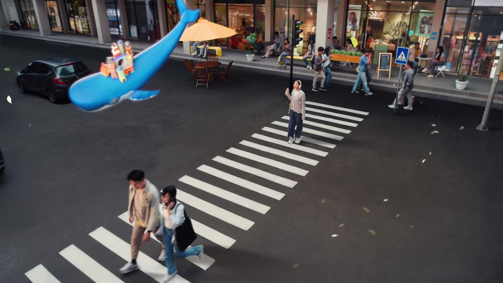
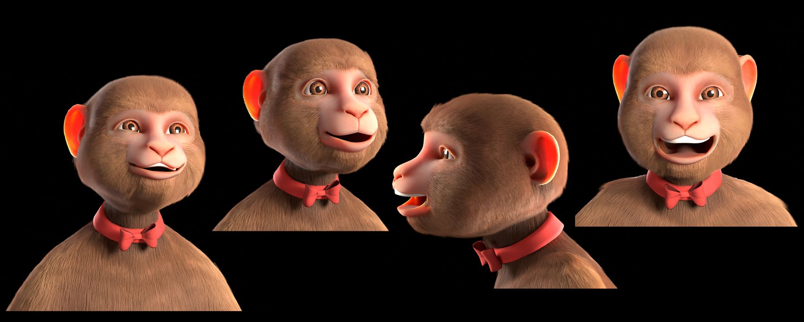
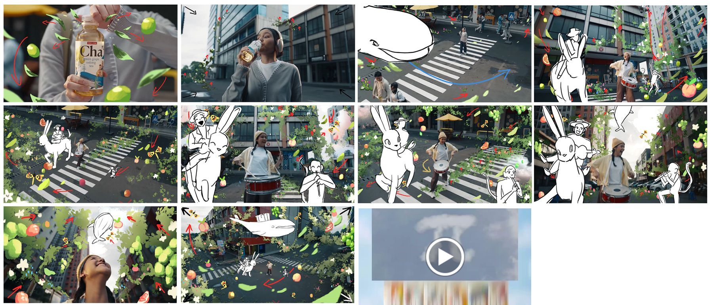
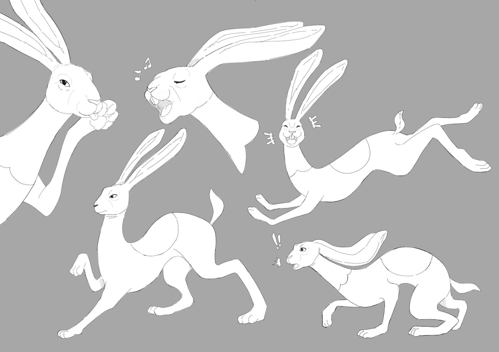
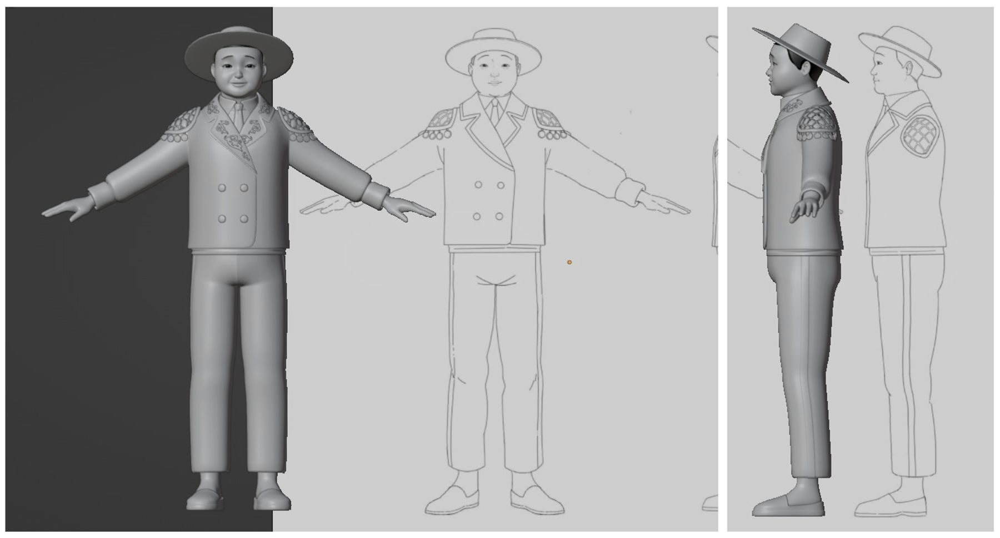
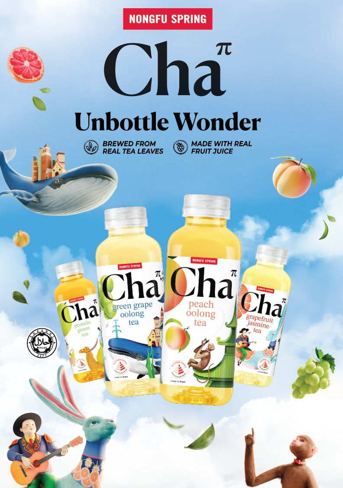
Cha π, a ready-to-drink tea from China, was launching across Southeast Asia, and the brand's down-to-earth voice had to survive every market. So the wonder begins in an ordinary moment. Twist the cap, and characters from the Cha π world step out beside real people on real streets.
Shell Advance, Asia Pacific. Creative lead at Briq, 2025.
Riders can tell who knows the sport. So riders and mechanics do the talking.
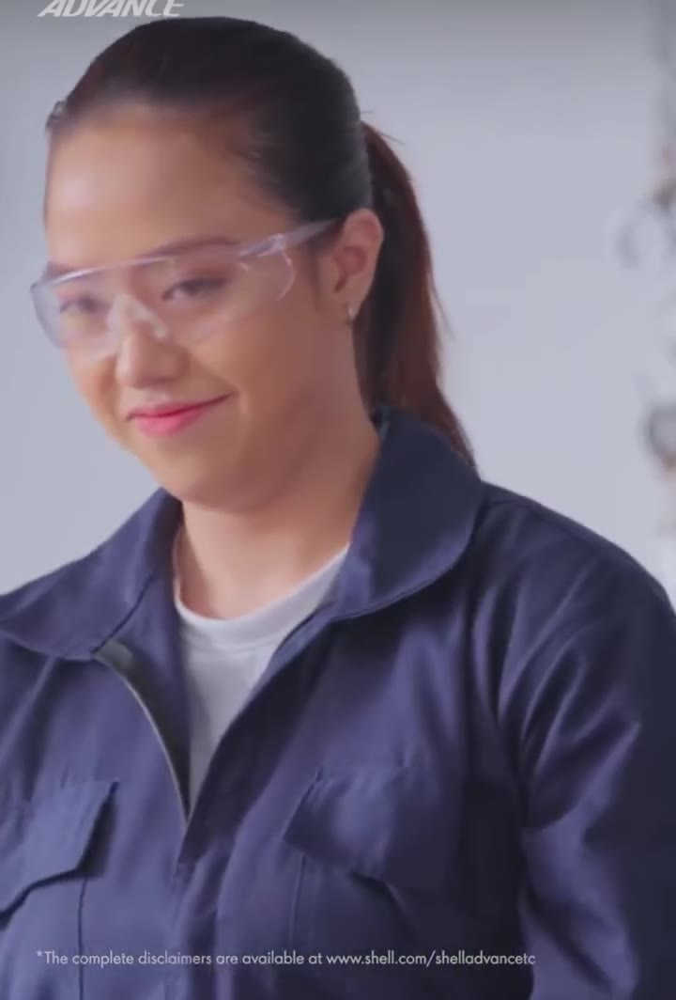
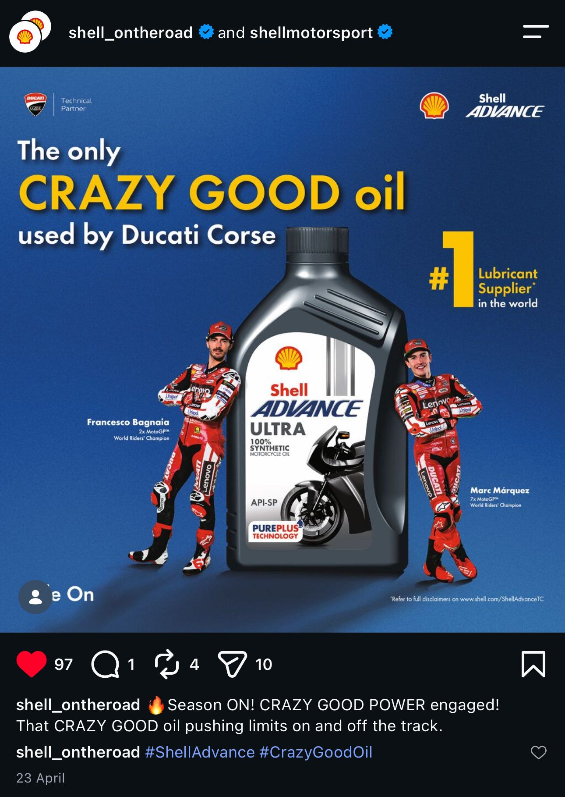
Shell Advance social across Asia Pacific, built from inside riding culture: content made by riders themselves, collaborations with mechanics around the region, a Ducati series, and race weekends with Marc Márquez and Francesco Bagnaia.
Singapore's National Water Agency. Art director at Tribal Worldwide, 2020 to 2022.
Water arrives so easily it becomes invisible. The work made people see the care inside every drop.
Campaigns for Singapore's national water agency about why water is precious, how it brings people together, and how much love goes into every drop. The team re-pitched PUB and kept the account.
The Frog Prince
2020
A ten minute Qing Ming film set in 1970s Singapore, about filial piety and remembering where our blessings come from. One of PUB's most shared posts of 2020.
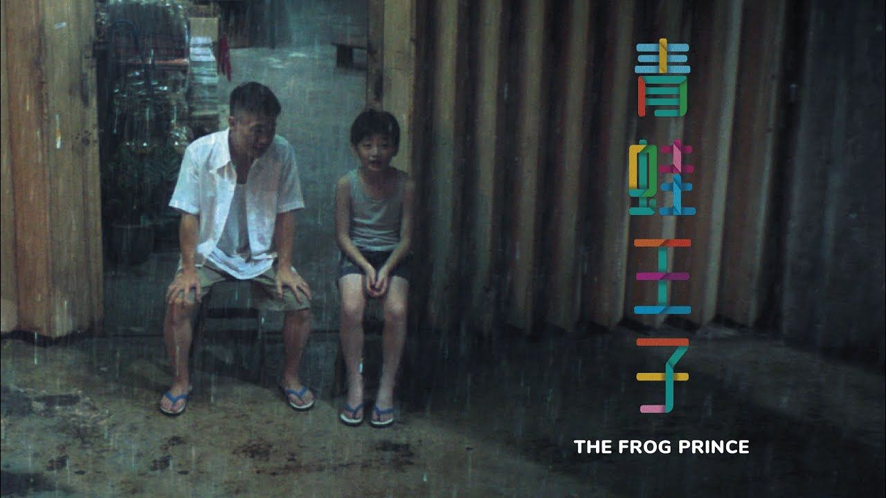
The Frog Prince
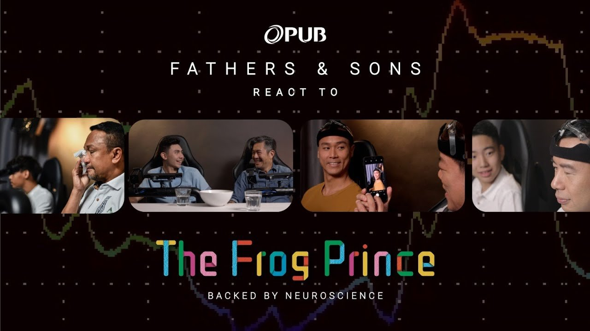
Fathers and sons react
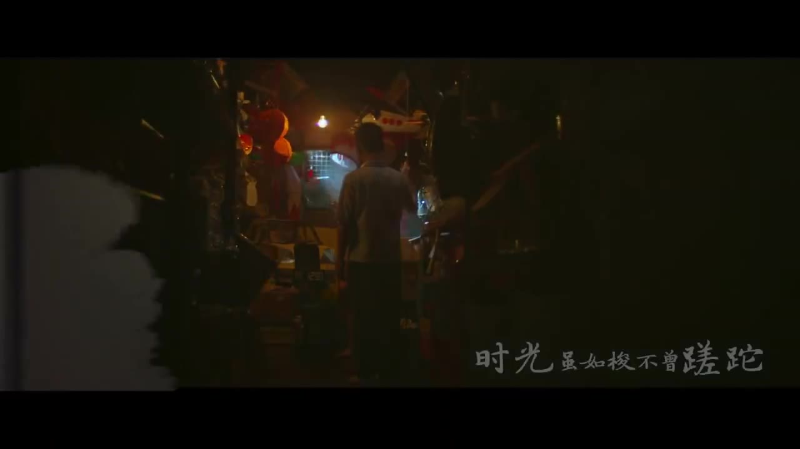
Theme song, 一点一滴
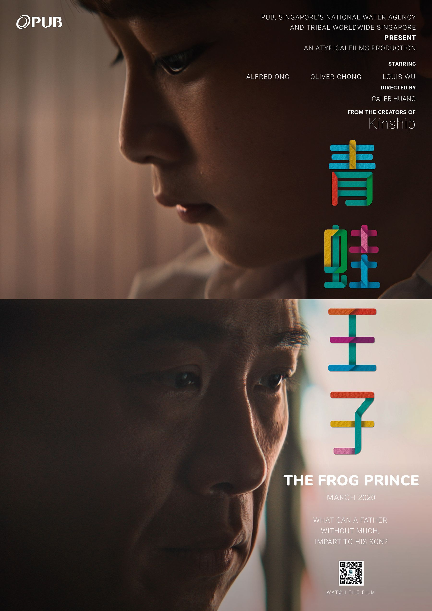
Best Cinematography, Canberra Film Festival
Gold, Film (Online), Gong Awards
Bronze, Direction, Gong Awards
Gold, Most Effective Use, MARKies
Bronze, Video Stars, AdStars
Tuas Nexus
2021
The launch of Singapore's first integrated water and solid waste treatment facility, and the care engineered into it.
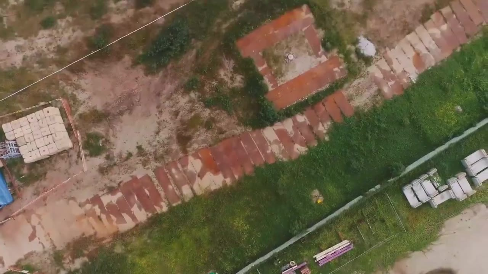
Tuas Nexus
The Flash Mob
2022
Floodwater as an opportunist mob racing through the streets, until PUB's defences stop it. 26K views and 62 shares in its first week.
National Library Board. Art director at Dentsu, 2018.
One book is a step. A stack becomes a staircase. Read enough, and you're off the ground.
The National Reading Movement asked Singaporeans to read more, at a moment when the library was stepping beyond its walls and into people's phones through an app. The film shows what books do for you. The roadshow met readers where they already read, over coffee, beside artworks painted with it.
The EOS M200 could never win a spec fight against DSLRs and studio setups, so the launch refused to have one. Small creators work alone, so the camera became the crew they don't have. A regional launch across Hong Kong, Taiwan and Southeast Asia, and Canon extended the TVC to Hong Kong, a first for the account.
Prudential, Asia Pacific and Hong Kong. Art director at Dentsu, 2019.
People are doing more than ever. We gave them somewhere to find their niche.
Do Generation was Prudential's brand campaign across Asia Pacific and Hong Kong: a film for the Do Tribe, from food to fitness to gardening. Pruworks for business was a separate, smaller B2B campaign, print written to the founders and HR leaders it serves. Art direction on both.
Ten years in Singapore agencies, between strategy, art direction and craft. I'd rather be in the room when the work is made than sign it off from a distance.
At Briq I grew the creative department from four people to nine and lead creative direction across eight to ten accounts. Before that, Distilleri, Tribal Worldwide and Dentsu.
BA (Hons) Communication Design, Glasgow School of Art, 2015